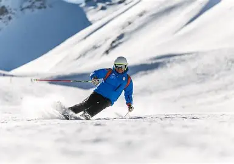

Sports are an essential part of life, offering numerous physical, mental, and social benefits. They help improve fitness, build stamina, and enhance coordination, making the body stronger and healthier. Beyond physical well-being, sports foster mental resilience, teaching discipline, teamwork, and the ability to handle both success and failure gracefully. Engaging in sports also promotes a sense of community, as it brings people together, encouraging camaraderie and mutual respect. Whether it’s a competitive game or a casual activity, sports inspire a spirit of determination and joy, making them a vital aspect of a balanced and fulfilling lifestyle.
Football, also known as soccer in some countries, is celebrated for its simplicity, requiring only a ball and an open space, yet it demands skill, teamwork, and strategic thinking. The game is played on a rectangular field with a goal at each end, and matches are divided into two halves of 45 minutes each. Players use their feet to dribble, pass, and shoot the ball, though goalkeepers are allowed to use their hands within the penalty area. Football has a rich history, with internationally recognized competitions like the FIFA World Cup inspiring millions of fans worldwide. Beyond its status as a competitive sport, football fosters community spirit, physical fitness, and cross-cultural connections, making it one of the most popular and influential sports in the world.
Basketball is played between two teams, each typically consisting of five players on the court, with the primary objective of scoring points by shooting the ball through the opponent’s hoop. The game emphasizes a combination of dribbling, passing, shooting, and defensive strategies to outmaneuver the opposing team. Originating in 1891 by James Naismith in the United States, basketball has grown into a global sport, with professional leagues, international competitions, and the Olympic Games showcasing elite talent. The sport promotes teamwork, quick decision-making, and physical endurance, and it is popular at both recreational and competitive levels, inspiring millions of enthusiasts to play in schools, clubs, and communities worldwide.
Tennis is a popular racket sport played individually or in pairs, where players use a racket to hit a felt-covered ball over a net into the opponent's court. The game combines agility, strategy, and endurance, with points scored when the opponent fails to return the ball within the designated boundaries. Originating in France during the 12th century as a handball game, it evolved into modern tennis in the late 19th century and is now played worldwide on surfaces such as grass, clay, and hard courts. Tennis is governed by well-defined rules and features major international tournaments like Wimbledon, the US Open, the French Open, and the Australian Open, collectively known as the Grand Slam events, which draw top players and global audiences, making it both a competitive and widely celebrated sport.
Ice hockey is a fast-paced team sport played on an ice rink, where two teams of six players each, including a goaltender, compete to score goals by hitting a small rubber puck into the opposing team's net using sticks. Known for its speed, physicality, and strategic play, ice hockey combines elements of skill, endurance, and teamwork, with players skating at high speeds while executing passes, shots, and defensive maneuvers. The game is divided into three periods, and penalties are enforced for infractions such as tripping, slashing, or checking illegally, which emphasizes both fair play and discipline. Ice hockey is particularly popular in countries with cold climates, such as Canada, the United States, Russia, and several European nations, and it is featured prominently in international competitions like the Winter Olympics and the Ice Hockey World Championships.
 Skiing is an exhilarating winter sport that combines skill, balance, and a sense of adventure as enthusiasts glide gracefully over snow-covered slopes. Whether navigating gentle trails or challenging downhill runs, skiers experience the rush of cold wind, the rhythm of carving turns, and the thrill of speeding down mountains surrounded by breathtaking snowy landscapes. This activity demands both physical endurance and mental focus, as each slope presents new challenges and opportunities to master technique. Beyond the sport itself, skiing offers a unique connection with nature, providing moments of tranquility amidst towering pines and pristine white expanses, making it a beloved pastime for both adrenaline seekers and those who simply enjoy the serene beauty of winter.